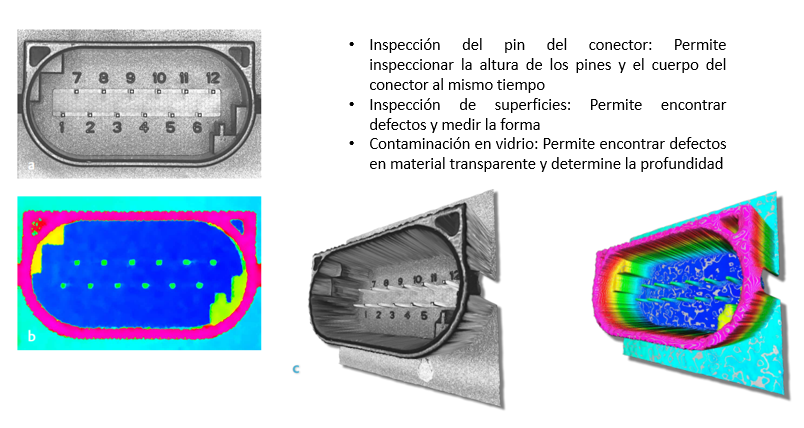
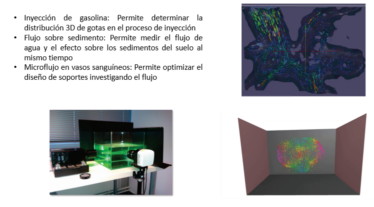
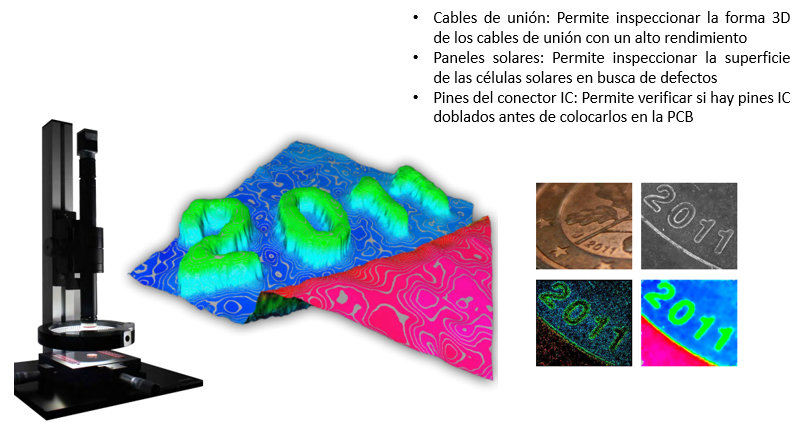
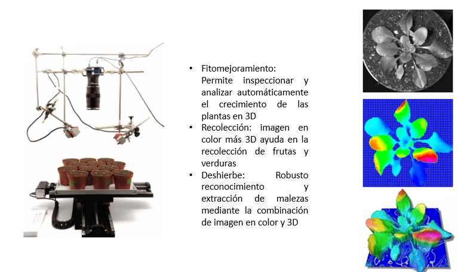
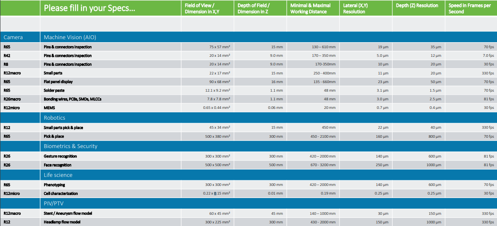

Aplicaciones
Aquí se presentan algunas de las aplicaciones para las cuales puede resultar muy útil el trabajo con una cámara plenóptica
Visión artificial 3D

Mecánica de Fluidos 3D

microscopía en 3D

Análisis de plantas 3D

A continuación se encuentran los distintos modelos de cámaras Raytrix disponibles actualmente en el mercado con algunas especificaciones de sus rangos de trabajo y aplicaciones:
